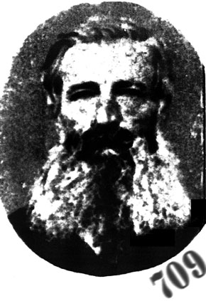
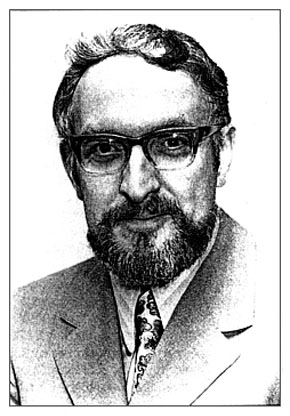
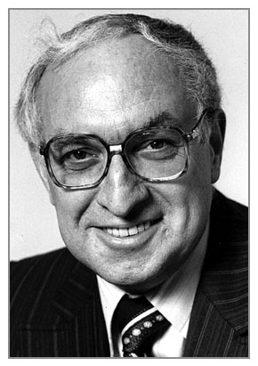
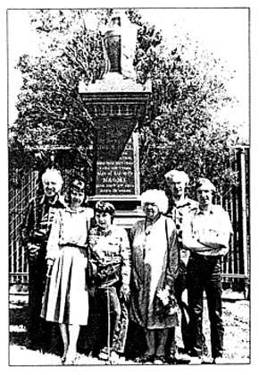

|
The
day I finally located the photograph of my great great
grandfather John Hill, seven years of part-time hobbying in
genealogy were rewarded with a rare chance to glimpse again a
remarkable, pioneering member of my family born in 1798.
Because the first
photographs were taken in France in 1839 using the daguerrotype
process, it seemed highly unlikely that I would ever find a
photograph of him. The photograph which I finally unearthed
shows a man with deep set eyes staring straight at the camera.
His full beard is bushy and grey at the edges, yet strangely
black on the chin. A bold, black moustache underpins a forceful,
aquiline nose.
When John Hill
left Bristol in the Ward Chipman on 21 March 1840 he was
headed for the Port Phillip District in the Colony of New South
Wales. Separation had not taken place and Victoria would not be
created as a separate colony until 1850. Sailing with him was
his wife Naomi and their sons John, Rowland, William, Edward and
Henry. They arrived in Port Phillip on 16 December 1840.
The journey took
nearly nine months and the ship's captain, in a report to His
Excellency C.J. La Trobe, hints at the problems on that long
trip. In Melbourne on 4 January 1841 he wrote regarding payment
of bounty to the ship's owner William Williams of Bristol:
. . . if the immigrants had experienced proper treatment
during the voyage, but as the enquiry on that subject is still
sub-judice, we refrain from further comment on that particular.
The shipping
records show that John was 38 at the time and his calling is
recorded as a Carpenter/Sawyer. His wife Naomi was 37. They were
each paid a bounty of 19 pounds for migrating, whilst the five
sons were paid a total of 50 pounds between them.
Writing a few
years ago, my mother's aunt told of her father, John junior aged
16, talking of helping with the rationing of water on the ship
during the nine month voyage.
They were nearly a fortnight
coming up Port Phillip Bay. When they slowly made their way up
the river, on which sides, numbers of stark naked blacks jumped
around and slapped their rumps at us. His mother gathered the
little ones around her and wept.
In 1841 the
population of Port Phillip District was 20,416. By the time John
Hill died on 26 May 1866, aged 68 years, the population had
risen to 633,602.
As I stood
admiring his red granite tombstone in the pioneer's section of
the Burwood Cemetery I thought that there might be another
tangible record of his pioneering life in Port Phillip Colony
apart from this imposing five metre high memorial.
Browsing through The Story
of the Camera in Australia by Jack Cato, one day at the
Nunawading Library, I found the clue which set me in search of
great great grandfather's photograph. Cato relates how Thomas
Foster Chuck set about photographing the Colony of Victoria's
first explorers, pioneers and settlers who were still alive
around 1864.
When Chuck
completed the task of photographing as many of the pioneers as
he could the result became a huge mosaic standing nearly two
metres high.
The
book said the mosaic was stored in the basement of the State
Library. It contains over 1,000 portraits and is titled The
explorers and early colonists of Victoria. There are no
women acknowledged as pioneers. The portraits are numbered, and
there is an accompanying key for identification.
A quick phone call
to the helpful staff at the La Trobe Library confirmed that this
large slice of Victoria's early history still exists and that an
index is available to check the names of all the pioneers Chuck
photographed. My great great grandfather John Hill is No. 709 and a
search at the La Trobe Library showed him gazing out among his
fellow pioneers. If you have a member of your family among the
group you can purchase a print of that section of the mosaic for
a nominal sum.

Genealogy is a fascinating and
exciting hobby which more and more people are undertaking as
Australia moves towards celebrating its 200th in 1988.
The Macquarie Dictionary definition of genealogy as '... an account
of the descent of a person or family through an ancestral line',
does not prepare one for the surprises and delights which await
the keen genealogist tracking back through old records, files,
family Bibles and letters.
|
 |

Above: The author, when
bearded, showing a remarkable likeness to his ancestor pictured opposite in a detail from the mosaic of pioneers

The author, Robin Howells, today; he is as delighted as any
amateur detective with the success of his quest for information
about his ancestor.
Getting started in
genealogy is quite simple. You just need to start with yourself
and then start tracking back through all the available public
records. When I set out to find out all about my family and our
forbears I began by writing down all the details from my own
birth certificate.
This tells where you were born, the name, age and occupations of
your parents and your mother's maiden surname. From there you
just need to work back through successive generations as far as
you can find records.
Want to start unravelling your own family history? Then the best
place to begin is with the information to be found on birth,
death and marriage certificates. Here is a complete list of
addresses for all the Registrars in Australia.
New South Wales
The Registrar,
Registry of Births, Deaths and Marriages, 3rd Floor, 50 Bridge
Street, Sydney, NSW 2000.
Victoria
The Government Statist,
295 Queen Street,
Melbourne, Victoria 3000
South Australia
The Principal Registrar,
G.P.O. Box 1351,
Adelaide, SA 5001

John Hill's descendants at his memorial in the pioneer section
of the Burwood Cemetery: the author, his wife Lesley, daughter Sam, mother Joan, brother Bruce and son Gareth.
ACT
The Registrar,
Births, Deaths & Marriage Registry,
Australian Capital Territory
P.O. Box 788,
Canberra, ACT 2601
Western Australia
The Registrar-General,
Oakleigh Building,
22 St George's Terrace,
Perth, WA 6000
Northern Territory
The Registrar-General,
Registry of Births, Deaths and Marriages,
P.O. Box 3021,
Darwin, NT 5794
Queensland
The Registrar-General,
Old Treasury Building,
Brisbane, Qld 4000
Tasmania (Post 1900)
The Registrar-General,
G.P.O. Box 875 J,
Hobart, Tas. 7001
(Pre 1900) Access in person only
The Principal Archivist,
91 Murray Street,
Hobart, Tas. 7000
Fees for
certificates vary between States, so check the current fees when
you start to trace your family tree. |